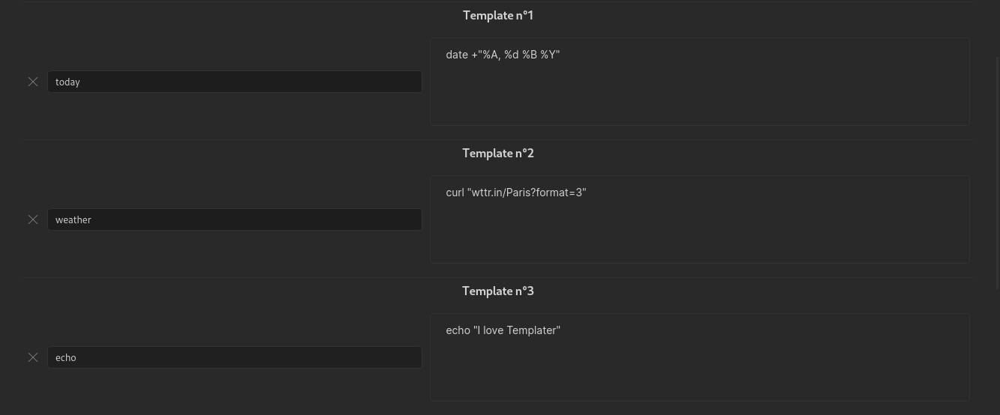

Introduction
Templater is a template language that lets you insert variables and functions results into your notes. It will also let you execute JavaScript code manipulating those variables and functions.
With Templater, you will be able to create powerful templates to automate manual tasks.
Quick Example
The following template file, that is using Templater syntax:
---
creation date: <% tp.file.creation_date() %>
modification date: <% tp.file.last_modified_date("dddd Do MMMM YYYY HH:mm:ss") %>
---
<< [[<% tp.date.now("YYYY-MM-DD", -1) %>]] | [[<% tp.date.now("YYYY-MM-DD", 1) %>]] >>
# <% tp.file.title %>
<% tp.web.daily_quote() %>
Will produce the following result when inserted:
---
creation date: 2021-01-07 17:20
modification date: Thursday 7th January 2021 17:20:43
---
<< [[2021-04-08]] | [[2021-04-10]] >>
# Test Test
> Do the best you can until you know better. Then when you know better, do better.
> — <cite>Maya Angelou</cite>
Installation
You can install this plugin via the Community Plugins tab within Obsidian. Search for "Templater".
It's a good practice to restart the Obsidian app after the installation of Templater, to make sure everything is working properly.
Terminology
To understand how Templater works, let's define a few terms:
- A template is a file that contains commands.
- A text snippet that starts with an opening tag
<%, ends with a closing tag%>is what we will call a command. - A function is an object that we can invoke inside a command and that returns a value (the replacement string)
There are two types of functions you can use:
- Internal functions. They are predefined functions that are built within the plugin. As an example,
tp.date.nowis an internal function that will return the current date. - User functions. Users can define their own functions. They are either system command or user scripts.
Example
The following template contains 2 commands, calling 2 different internal functions:
Yesterday: <% tp.date.yesterday("YYYY-MM-DD") %>
Tomorrow: <% tp.date.tomorrow("YYYY-MM-DD") %>
We'll see in the next part the syntax required to write some commands.
Syntax
Templater uses a custom templating engine (rusty_engine) syntax to declare a command. You may need a bit of time to get used to it, but once you get the idea, the syntax is not that hard.
All of Templater's functions are JavaScript objects that are invoked using a command.
Command syntax
A command must have both an opening tag <% and a closing tag %>.
A complete command using the tp.date.now internal function would be: <% tp.date.now() %>
Function syntax
Objects hierarchy
All of Templater's functions, whether it's an internal function or a user function, are available under the tp object. You could say that all our functions are children of the tp object. To access the "child" of an object, we have to use the dot notation .
This means that a Templater function invocation will always start with tp.<something>
Function invocation
To invoke a function, we need to use a syntax specific to functions calls: appending an opening and a closing parenthesis after the function name.
As an example, we would use tp.date.now() to invoke the tp.date.now internal function.
A function can have arguments and optional arguments. They are placed between the opening and the closing parenthesis, like so:
tp.date.now(arg1_value, arg2_value, arg3_value, ...)
All arguments must be passed in the correct order.
The arguments of a function can have different types. Here is a non-exhaustive list of the possible types of a function:
- A
stringtype means the value must be placed within simple or double quotes ("value"or'value') - A
numbertype means the value must be an integer (15,-5, ...) - A
booleantype means the value must be eithertrueorfalse(completely lower case), and nothing else.
The type of an argument must be respected when calling a function, or it won't work.
Function documentation syntax
The documentation for the internal functions of Templater are using the following syntax:
tp.<my_function>(arg1_name: type, arg2_name?: type, arg3_name: type = <default_value>, arg4_name: type1|type2, ...)
Where:
arg_namerepresents a symbolic name for the argument, to understand what it is.typerepresents the expected type for the argument. This type must be respected when calling the internal function, or it will throw an error.
If an argument is optional, it will be appended with a question mark ?, e.g. arg2_name?: type
If an argument has a default value, it will be specified using an equal sign =, e.g. arg3_name: type = <default_value>.
If an argument can have different types, it will be specified using a pipe |, e.g. arg4_name: type1|type2
Syntax warning
Please note that this syntax is for documentation purposes only, to be able to understand what arguments the function expects.
You mustn't specify the name nor the type nor the default value of an argument when calling a function. Only the value of the arguments are required, as explained here
Example
Let's take the tp.date.now internal function documentation as an example:
tp.date.now(format?: string = "YYYY-MM-DD", offset?: number|string, reference?: string, reference_format?: string)
This internal function has 4 optional arguments:
- a format of type
string, with a default value of"YYYY-MM-DD". - an offset of type
numberor of typestring. - a reference of type
string. - a reference_format of type
string.
That means that valid invocations for this internal function are:
<% tp.date.now() %><% tp.date.now("YYYY-MM-DD", 7) %><% tp.date.now("YYYY-MM-DD", 7, "2021-04-09", "YYYY-MM-DD") %><% tp.date.now("dddd, MMMM Do YYYY", 0, tp.file.title, "YYYY-MM-DD") %>*Assuming the file name is of the format: "YYYY-MM-DD"
On the other hand, invalid invocations are:
tp.date.now(format: string = "YYYY-MM-DD")tp.date.now(format: string = "YYYY-MM-DD", offset?: 0)
Settings
General Settings
Template folder location: Files in this folder will be available as templates.Syntax Highlighting on Desktopadds syntax highlighting for Templater commands in edit mode.Syntax Highlighting on Mobileadds syntax highlighting for Templater commands in edit mode on mobile. Use with caution: this may break live preview on mobile platforms."Automatic jump to cursorautomatically triggerstp.file.cursorafter inserting a template. You can also set a hotkey to manually triggertp.file.cursor.Trigger Templater on new file creation: Templater will listen for the new file creation event, and, if it matches a rule you've set, replace every command it finds in the new file's content. This makes Templater compatible with other plugins like the Daily note core plugin, Calendar plugin, Review plugin, Note refactor plugin, etc.- Make sure to set up rules under either Folder Templates or File Regex Template below.
- Warning: This can be dangerous if you create new files with unknown / unsafe content on creation. Make sure that every new file's content is safe on creation."
Template Hotkeys
Template Hotkeys allows you to bind a template to a hotkey.
Folder Templates
Note: This setting is hidden by default. To view it first enable the Trigger Template on new file creation setting. And since it's mutually exclusive with File Regex Templates, enabling one will disable the other.
You can specify a template that will automatically be used on a selected folder and children using the Folder Templates functionality. The deepest match will be used, so the order of the rules is irrelevant.
Add a rule for "/" if you need a catch-all.
File Regex Templates
Note: This setting is hidden by default. To view it first enable the Trigger Template on new file creation setting. And since it's mutually exclusive with Folder Templates, enabling one will disable the other.
You can specify regex declarations that a new file's path will be tested against. If a regex matches, the associated template will automatically be used. Rules are tested top-to-bottom, and the first match will be used.
End with a rule for ".*" if you need a catch-all.
Use a tool like Regex101 to verify your regexes.
Startup Templates
Startup Templates are templates that will get executed once when Templater starts.
These templates won't output anything.
This can be useful to set up templates adding hooks to obsidian events for example.
User Script Functions
All JavaScript files in this folder will be loaded as CommonJS modules, to import custom user functions.
The folder needs to be accessible from the vault.
Check the documentation for more information.
User System Command Functions
Allows you to create user functions linked to system commands.
Check the documentation for more information.
Warning: It can be dangerous to execute arbitrary system commands from untrusted sources. Only run system commands that you understand, from trusted sources.
Frequently Asked Questions
Unicode characters (emojis, ...) are not working on Windows ?
cmd.exe and powershell on Windows are known to have problems with unicode characters.
You can check https://github.com/SilentVoid13/Templater/issues/15#issuecomment-824067020 for a solution.
Another good solution (probably the best) is to use Windows Terminal and set it as the default shell in Templater's setting.
Another resource containing solutions that could work for you: https://stackoverflow.com/questions/49476326/displaying-unicode-in-powershell
Internal Functions
The different internal variables and functions offered by Templater are available under different modules, to sort them. The existing internal modules are:
- App module:
tp.app - Config module:
tp.config - Date module:
tp.date - File module:
tp.file - Frontmatter module:
tp.frontmatter - Hooks module:
tp.hooks - Obsidian module:
tp.obsidian - System module:
tp.system - Web module:
tp.web
If you understood the object hierarchy correctly, this means that a typical internal function call looks like this: <% tp.<module_name>.<internal_function_name> %>
Contribution
I invite everyone to contribute to this plugin development by adding new internal functions. More information here.
App Module
This module exposes the app instance. Prefer to use this over the global app instance.
This is mostly useful when writing scripts.
Refer to the Obsidian developer documentation for more information.
Examples
// Get all folders
<%
tp.app.vault.getAllLoadedFiles()
.filter(x => x instanceof tp.obsidian.TFolder)
.map(x => x.name)
%>
// Update frontmatter of existing file
<%*
const file = tp.file.find_tfile("path/to/file");
await tp.app.fileManager.processFrontMatter(file, (frontmatter) => {
frontmatter["key"] = "value";
});
%>
Config Module
This module exposes Templater's running configuration.
This is mostly useful when writing scripts requiring some context information.
Documentation
tp.config.active_file?
The active file (if existing) when launching Templater.
tp.config.run_mode
The RunMode, representing the way Templater was launched (Create new from template, Append to active file, ...).
tp.config.target_file
The TFile object representing the target file where the template will be inserted.
tp.config.template_file
The TFile object representing the template file.
Date Module
This module contains every internal function related to dates.
- Documentation
tp.date.now(format: string = "YYYY-MM-DD", offset?: number⎮string, reference?: string, reference_format?: string)tp.date.tomorrow(format: string = "YYYY-MM-DD")tp.date.weekday(format: string = "YYYY-MM-DD", weekday: number, reference?: string, reference_format?: string)tp.date.yesterday(format: string = "YYYY-MM-DD")
- Moment.js
- Examples
Documentation
Function documentation is using a specific syntax. More information here.
tp.date.now(format: string = "YYYY-MM-DD", offset?: number⎮string, reference?: string, reference_format?: string)
Retrieves the date.
Arguments
-
format: The format for the date. Defaults to"YYYY-MM-DD". Refer to format reference. -
offset: Duration to offset the date from. If a number is provided, duration will be added to the date in days. You can also specify the offset as a string using the ISO 8601 format. -
reference: The date referential, e.g. set this to the note's title. -
reference_format: The format for the reference date. Refer to format reference.
Examples
// Date now
<% tp.date.now() %>
// Date now with format
<% tp.date.now("Do MMMM YYYY") %>
// Last week
<% tp.date.now("YYYY-MM-DD", -7) %>
// Next week
<% tp.date.now("YYYY-MM-DD", 7) %>
// Last month
<% tp.date.now("YYYY-MM-DD", "P-1M") %>
// Next year
<% tp.date.now("YYYY-MM-DD", "P1Y") %>
// File's title date + 1 day (tomorrow)
<% tp.date.now("YYYY-MM-DD", 1, tp.file.title, "YYYY-MM-DD") %>
// File's title date - 1 day (yesterday)
<% tp.date.now("YYYY-MM-DD", -1, tp.file.title, "YYYY-MM-DD") %>
tp.date.tomorrow(format: string = "YYYY-MM-DD")
Retrieves tomorrow's date.
Arguments
format: The format for the date. Defaults to"YYYY-MM-DD". Refer to format reference.
Examples
// Date tomorrow
<% tp.date.tomorrow() %>
// Date tomorrow with format
<% tp.date.tomorrow("Do MMMM YYYY") %>
tp.date.weekday(format: string = "YYYY-MM-DD", weekday: number, reference?: string, reference_format?: string)
Arguments
-
format: The format for the date. Defaults to"YYYY-MM-DD". Refer to format reference. -
weekday: Week day number. If the locale assigns Monday as the first day of the week,0will be Monday,-7will be last week's day. -
reference: The date referential, e.g. set this to the note's title. -
reference_format: The format for the reference date. Refer to format reference.
Examples
// This week's Monday
<% tp.date.weekday("YYYY-MM-DD", 0) %>
// Next Monday
<% tp.date.weekday("YYYY-MM-DD", 7) %>
// File's title Monday
<% tp.date.weekday("YYYY-MM-DD", 0, tp.file.title, "YYYY-MM-DD") %>
// File's title previous Monday
<% tp.date.weekday("YYYY-MM-DD", -7, tp.file.title, "YYYY-MM-DD") %>
tp.date.yesterday(format: string = "YYYY-MM-DD")
Retrieves yesterday's date.
Arguments
format: The format for the date. Defaults to"YYYY-MM-DD". Refer to format reference.
Examples
// Date yesterday
<% tp.date.yesterday() %>
// Date yesterday with format
<% tp.date.yesterday("Do MMMM YYYY") %>
Moment.js
Templater gives you access to the moment object, with all of its functionalities.
More information on moment.js here.
Examples
// Date now
<% moment(tp.file.title, "YYYY-MM-DD").format("YYYY-MM-DD") %>
// Get start of month from note title
<% moment(tp.file.title, "YYYY-MM-DD").startOf("month").format("YYYY-MM-DD") %>
// Get end of month from note title
<% moment(tp.file.title, "YYYY-MM-DD").endOf("month").format("YYYY-MM-DD") %>
Examples
// Date now
<% tp.date.now() %>
// Date now with format
<% tp.date.now("Do MMMM YYYY") %>
// Last week
<% tp.date.now("YYYY-MM-DD", -7) %>
// Next week
<% tp.date.now("YYYY-MM-DD", 7) %>
// Last month
<% tp.date.now("YYYY-MM-DD", "P-1M") %>
// Next year
<% tp.date.now("YYYY-MM-DD", "P1Y") %>
// File's title date + 1 day (tomorrow)
<% tp.date.now("YYYY-MM-DD", 1, tp.file.title, "YYYY-MM-DD") %>
// File's title date - 1 day (yesterday)
<% tp.date.now("YYYY-MM-DD", -1, tp.file.title, "YYYY-MM-DD") %>
// Date tomorrow
<% tp.date.tomorrow() %>
// Date tomorrow with format
<% tp.date.tomorrow("Do MMMM YYYY") %>
// This week's Monday
<% tp.date.weekday("YYYY-MM-DD", 0) %>
// Next Monday
<% tp.date.weekday("YYYY-MM-DD", 7) %>
// File's title Monday
<% tp.date.weekday("YYYY-MM-DD", 0, tp.file.title, "YYYY-MM-DD") %>
// File's title previous Monday
<% tp.date.weekday("YYYY-MM-DD", -7, tp.file.title, "YYYY-MM-DD") %>
// Date yesterday
<% tp.date.yesterday() %>
// Date yesterday with format
<% tp.date.yesterday("Do MMMM YYYY") %>
File Module
This module contains every internal function related to files.
- Documentation
tp.file.contenttp.file.create_new(template: TFile ⎮ string, filename?: string, open_new: boolean = false, folder?: TFolder | string)tp.file.creation_date(format: string = "YYYY-MM-DD HH:mm")tp.file.cursor(order?: number)tp.file.cursor_append(content: string)tp.file.exists(filepath: string)tp.file.find_tfile(filename: string)tp.file.folder(absolute: boolean = false)tp.file.include(include_link: string ⎮ TFile)tp.file.last_modified_date(format: string = "YYYY-MM-DD HH:mm")tp.file.move(new_path: string, file_to_move?: TFile)tp.file.path(relative: boolean = false)tp.file.rename(new_title: string)tp.file.selection()tp.file.tagstp.file.title
- Examples
Documentation
Function documentation is using a specific syntax. More information here.
tp.file.content
The string contents of the file at the time that Templater was executed. Manipulating this string will not update the current file.
Examples
// Retrieve file content
<% tp.file.content %>
tp.file.create_new(template: TFile ⎮ string, filename?: string, open_new: boolean = false, folder?: TFolder | string)
Creates a new file using a specified template or with a specified content.
Arguments
-
template: Either the template used for the new file content, or the file content as a string. If it is the template to use, you retrieve it withtp.file.find_tfile(TEMPLATENAME). -
filename: The filename of the new file, defaults to "Untitled". -
open_new: Whether to open or not the newly created file. Warning: if you use this option, since commands are executed asynchronously, the file can be opened first and then other commands are appended to that new file and not the previous file. -
folder: The folder to put the new file in, defaults to Obsidian's default location. If you want the file to appear in a different folder, specify it with"PATH/TO/FOLDERNAME"ortp.app.vault.getAbstractFileByPath("PATH/TO/FOLDERNAME").
Examples
// File creation
<%* await tp.file.create_new("MyFileContent", "MyFilename") %>
// File creation with template
<%* await tp.file.create_new(tp.file.find_tfile("MyTemplate"), "MyFilename") %>
// File creation and open created note
<%* await tp.file.create_new("MyFileContent", "MyFilename", true) %>
// File creation in current folder
<%* await tp.file.create_new("MyFileContent", "MyFilename", false, tp.file.folder(true)) %>
// File creation in specified folder with string path
<%* await tp.file.create_new("MyFileContent", "MyFilename", false, "Path/To/MyFolder") %>
// File creation in specified folder with TFolder
<%* await tp.file.create_new("MyFileContent", "MyFilename", false, tp.app.vault.getAbstractFileByPath("MyFolder")) %>
// File creation and append link to current note
[[<% (await tp.file.create_new("MyFileContent", "MyFilename")).basename %>]]
tp.file.creation_date(format: string = "YYYY-MM-DD HH:mm")
Retrieves the file's creation date.
Arguments
format: The format for the date. Defaults to"YYYY-MM-DD HH:mm". Refer to format reference.
Examples
// File creation date
<% tp.file.creation_date() %>
// File creation date with format
<% tp.file.creation_date("dddd Do MMMM YYYY HH:mm") %>
tp.file.cursor(order?: number)
Sets the cursor to this location after the template has been inserted.
You can navigate between the different cursors using the configured hotkey in Obsidian settings.
Arguments
order: The order of the different cursors jump, e.g. it will jump from 1 to 2 to 3, and so on. If you specify multiple tp.file.cursor with the same order, the editor will switch to multi-cursor.
Examples
// File cursor
<% tp.file.cursor() %>
// File multi-cursor
<% tp.file.cursor(1) %>Content<% tp.file.cursor(1) %>
tp.file.cursor_append(content: string)
Appends some content after the active cursor in the file.
Arguments
content: The content to append after the active cursor.
Examples
// File cursor append
<% tp.file.cursor_append("Some text") %>
tp.file.exists(filepath: string)
Check to see if a file exists by it's file path. The full path to the file, relative to the Vault and containing the extension, must be provided.
Arguments
filepath: The full file path of the file we want to check existence for.
Examples
// File existence
<% await tp.file.exists("MyFolder/MyFile.md") %>
// File existence of current file
<% await tp.file.exists(tp.file.folder(true) + "/" + tp.file.title + ".md") %>
tp.file.find_tfile(filename: string)
Search for a file and returns its TFile instance.
Arguments
filename: The filename we want to search and resolve as aTFile.
Examples
// File find TFile
<% tp.file.find_tfile("MyFile").basename %>
tp.file.folder(absolute: boolean = false)
Retrieves the file's folder name.
Arguments
absolute: If set totrue, returns the vault-absolute path of the folder. Iffalse, only returns the basename of the folder (the last part). Defaults tofalse.
Examples
// File folder (Folder)
<% tp.file.folder() %>
// File folder with vault-absolute path (Path/To/Folder)
<% tp.file.folder(true) %>
tp.file.include(include_link: string ⎮ TFile)
Includes the file's link content. Templates in the included content will be resolved.
Arguments
include_link: The link to the file to include, e.g."[[MyFile]]", or a TFile object. Also supports sections or blocks inclusions.
Examples
// File include
<% await tp.file.include("[[Template1]]") %>
// File include TFile
<% await tp.file.include(tp.file.find_tfile("MyFile")) %>
// File include section
<% await tp.file.include("[[MyFile#Section1]]") %>
// File include block
<% await tp.file.include("[[MyFile#^block1]]") %>
tp.file.last_modified_date(format: string = "YYYY-MM-DD HH:mm")
Retrieves the file's last modification date.
Arguments
format: The format for the date. Defaults to"YYYY-MM-DD HH:mm". Refer to format reference.
Examples
// File last modified date
<% tp.file.last_modified_date() %>
// File last modified date with format
<% tp.file.last_modified_date("dddd Do MMMM YYYY HH:mm") %>
tp.file.move(new_path: string, file_to_move?: TFile)
Moves the file to the desired vault location.
Arguments
-
new_path: The new vault relative path of the file, without the file extension. Note: the new path needs to include the folder and the filename, e.g."/Notes/MyNote". -
file_to_move: The file to move, defaults to the current file.
Examples
// File move
<%* await tp.file.move("/A/B/" + tp.file.title) %>
// File move and rename
<%* await tp.file.move("/A/B/NewTitle") %>
tp.file.path(relative: boolean = false)
Retrieves the file's absolute path on the system.
Arguments
relative: If set totrue, only retrieves the vault's relative path.
Examples
// File path
<% tp.file.path() %>
// File relative path (relative to vault root)
<% tp.file.path(true) %>
tp.file.rename(new_title: string)
Renames the file (keeps the same file extension).
Arguments
new_title: The new file title.
Examples
// File rename
<%* await tp.file.rename("MyNewName") %>
// File append a 2 to the file name
<%* await tp.file.rename(tp.file.title + "2") %>
tp.file.selection()
Retrieves the active file's text selection.
Examples
// File selection
<% tp.file.selection() %>
tp.file.tags
Retrieves the file's tags (array of string).
Examples
// File tags
<% tp.file.tags %>
tp.file.title
Retrieves the file's title.
Examples
// File title
<% tp.file.title %>
// Strip the Zettelkasten ID of title (if space separated)
<% tp.file.title.split(" ")[1] %>
Examples
// Retrieve file content
<% tp.file.content %>
// File creation
<%* await tp.file.create_new("MyFileContent", "MyFilename") %>
// File creation with template
<%* await tp.file.create_new(tp.file.find_tfile("MyTemplate"), "MyFilename") %>
// File creation and open created note
<%* await tp.file.create_new("MyFileContent", "MyFilename", true) %>
// File creation in current folder
<%* await tp.file.create_new("MyFileContent", "MyFilename", false, tp.file.folder(true)) %>
// File creation in specified folder with string path
<%* await tp.file.create_new("MyFileContent", "MyFilename", false, "Path/To/MyFolder") %>
// File creation in specified folder with TFolder
<%* await tp.file.create_new("MyFileContent", "MyFilename", false, tp.app.vault.getAbstractFileByPath("MyFolder")) %>
// File creation and append link to current note
[[<% (await tp.file.create_new("MyFileContent", "MyFilename")).basename %>]]
// File creation date
<% tp.file.creation_date() %>
// File creation date with format
<% tp.file.creation_date("dddd Do MMMM YYYY HH:mm") %>
// File cursor
<% tp.file.cursor() %>
// File multi-cursor
<% tp.file.cursor(1) %>Content<% tp.file.cursor(1) %>
// File cursor append
<% tp.file.cursor_append("Some text") %>
// File existence
<% await tp.file.exists("MyFolder/MyFile.md") %>
// File existence of current file
<% await tp.file.exists(tp.file.folder(true) + "/" + tp.file.title + ".md") %>
// File find TFile
<% tp.file.find_tfile("MyFile").basename %>
// File folder (Folder)
<% tp.file.folder() %>
// File folder with vault-absolute path (Path/To/Folder)
<% tp.file.folder(true) %>
// File include
<% await tp.file.include("[[Template1]]") %>
// File include TFile
<% await tp.file.include(tp.file.find_tfile("MyFile")) %>
// File include section
<% await tp.file.include("[[MyFile#Section1]]") %>
// File include block
<% await tp.file.include("[[MyFile#^block1]]") %>
// File last modified date
<% tp.file.last_modified_date() %>
// File last modified date with format
<% tp.file.last_modified_date("dddd Do MMMM YYYY HH:mm") %>
// File move
<%* await tp.file.move("/A/B/" + tp.file.title) %>
// File move and rename
<%* await tp.file.move("/A/B/NewTitle") %>
// File path
<% tp.file.path() %>
// File relative path (relative to vault root)
<% tp.file.path(true) %>
// File rename
<%* await tp.file.rename("MyNewName") %>
// File append a 2 to the file name
<%* await tp.file.rename(tp.file.title + "2") %>
// File selection
<% tp.file.selection() %>
// File tags
<% tp.file.tags %>
// File title
<% tp.file.title %>
// Strip the Zettelkasten ID of title (if space separated)
<% tp.file.title.split(" ")[1] %>
Frontmatter Module
This modules exposes all the frontmatter variables of a file as variables.
Documentation
tp.frontmatter.<frontmatter_variable_name>
Retrieves the file's frontmatter variable value.
If your frontmatter variable name contains spaces, you can reference it using the bracket notation like so:
<% tp.frontmatter["variable name with spaces"] %>
Examples
Let's say you have the following file:
---
alias: myfile
note type: seedling
---
file content
Then you can use the following template:
File's metadata alias: <% tp.frontmatter.alias %>
Note's type: <% tp.frontmatter["note type"] %>
For lists in frontmatter, you can use JavaScript array prototype methods to manipulate how the data is displayed.
---
categories:
- book
- movie
---
<% tp.frontmatter.categories.map(prop => ` - "${prop}"`).join("\n") %>
Hooks Module
This module exposes hooks that allow you to execute code when a Templater event occurs.
Documentation
Function documentation is using a specific syntax. More information here.
tp.hooks.on_all_templates_executed(callback_function: () => any)
Hooks into when all actively running templates have finished executing. Most of the time this will be a single template, unless you are using tp.file.include or tp.file.create_new.
Multiple invokations of this method will have their callback functions run in parallel.
Arguments
callback_function: Callback function that will be executed when all actively running templates have finished executing.
Examples
// Update frontmatter after template finishes executing
<%*
tp.hooks.on_all_templates_executed(async () => {
const file = tp.file.find_tfile(tp.file.path(true));
await tp.app.fileManager.processFrontMatter(file, (frontmatter) => {
frontmatter["key"] = "value";
});
});
%>
// Run a command from another plugin that modifies the current file, after Templater has updated the file
<%*
tp.hooks.on_all_templates_executed(() => {
tp.app.commands.executeCommandById("obsidian-linter:lint-file");
});
-%>
Obsidian Module
This module exposes all the functions and classes from the Obsidian API.
This is mostly useful when writing scripts.
Refer to the Obsidian API declaration file for more information.
Examples
// Get all folders
<%
tp.app.vault.getAllLoadedFiles()
.filter(x => x instanceof tp.obsidian.TFolder)
.map(x => x.name)
%>
// Normalize path
<% tp.obsidian.normalizePath("Path/to/file.md") %>
// Html to markdown
<% tp.obsidian.htmlToMarkdown("\<h1>Heading\</h1>\<p>Paragraph\</p>") %>
// HTTP request
<%*
const response = await tp.obsidian.requestUrl("https://jsonplaceholder.typicode.com/todos/1");
tR += response.json.title;
%>
System Module
This module contains system related functions.
- Documentation
tp.system.clipboard()tp.system.multi_suggester(text_items: string[] ⎮ ((item: T) => string), items: T[], throw_on_cancel: boolean = false, title: string = "", limit?: number = undefined)tp.system.prompt(prompt_text?: string, default_value?: string, throw_on_cancel: boolean = false, multiline?: boolean = false)tp.system.suggester(text_items: string[] ⎮ ((item: T) => string), items: T[], throw_on_cancel: boolean = false, placeholder: string = "", limit?: number = undefined)
- Examples
Documentation
Function documentation is using a specific syntax. More information here.
tp.system.clipboard()
Retrieves the clipboard's content.
Examples
// Clipboard
<% tp.system.clipboard() %>
tp.system.multi_suggester(text_items: string[] ⎮ ((item: T) => string), items: T[], throw_on_cancel: boolean = false, title: string = "", limit?: number = undefined)
Spawns a suggester prompt that supports selecting multiple items and returns the user's chosen items.
Arguments
-
text_items: Array of strings representing the text that will be displayed for each item in the suggester prompt. This can also be a function that maps an item to its text representation. -
items: Array containing the values of each item in the correct order. -
throw_on_cancel: Throws an error if the prompt is canceled, instead of returning anullvalue. -
title: Text placed at the top of the modal. -
limit: Limit the number of items rendered at once (useful to improve performance when displaying large lists).
Examples
// Multi-suggester
<% await tp.system.multi_suggester(["Happy", "Sad", "Confused"], ["Happy", "Sad", "Confused"]) %>
// Multi-suggester with mapping function (same as above example)
<% await tp.system.multi_suggester((item) => item, ["Happy", "Sad", "Confused"]) %>
// Multi-suggester for files
<% (await tp.system.multi_suggester((item) => item.basename, tp.app.vault.getMarkdownFiles())).map(f => `[[${f.basename}]]`) %>
// Multi-suggester for tags
<% await tp.system.multi_suggester(item => item, Object.keys(tp.app.metadataCache.getTags()).map(x => x.replace("#", ""))) %>
// Reuse value from multi-suggester
<%*
let selectedValues = await tp.system.multi_suggester(["Happy", "Sad", "Confused"], ["Happy", "Sad", "Confused"]);
%>
# <% selectedValues %>
selected values: <% selectedValues %>
tp.system.prompt(prompt_text?: string, default_value?: string, throw_on_cancel: boolean = false, multiline?: boolean = false)
Spawns a prompt modal and returns the user's input.
Arguments
-
prompt_text: Text placed above the input field. -
default_value: A default value for the input field. -
throw_on_cancel: Throws an error if the prompt is canceled, instead of returning anullvalue. -
multiline: If set totrue, the input field will be a multiline textarea. Defaults tofalse.
Examples
// Prompt
<% await tp.system.prompt("Please enter a value") %>
// Prompt with default value
<% await tp.system.prompt("What is your mood today?", "happy") %>
// Multiline prompt
<% await tp.system.prompt("What is your mood today?", null, false, true) %>
// Reuse output from prompt
<%*
let value = await tp.system.prompt("Please enter a value");
%>
# <% value %>
selected value: <% value %>
tp.system.suggester(text_items: string[] ⎮ ((item: T) => string), items: T[], throw_on_cancel: boolean = false, placeholder: string = "", limit?: number = undefined)
Spawns a suggester prompt and returns the user's chosen item.
Arguments
-
text_items: Array of strings representing the text that will be displayed for each item in the suggester prompt. This can also be a function that maps an item to its text representation. -
items: Array containing the values of each item in the correct order. -
throw_on_cancel: Throws an error if the prompt is canceled, instead of returning anullvalue. -
placeholder: Placeholder string of the prompt. -
limit: Limit the number of items rendered at once (useful to improve performance when displaying large lists).
Examples
// Suggester
<% await tp.system.suggester(["Happy", "Sad", "Confused"], ["Happy", "Sad", "Confused"]) %>
// Suggester with mapping function (same as above example)
<% await tp.system.suggester((item) => item, ["Happy", "Sad", "Confused"]) %>
// Suggester for files
[[<% (await tp.system.suggester((item) => item.basename, tp.app.vault.getMarkdownFiles())).basename %>]]
// Suggester for tags
<% await tp.system.suggester(item => item, Object.keys(tp.app.metadataCache.getTags()).map(x => x.replace("#", ""))) %>
// Reuse value from suggester
<%*
let selectedValue = await tp.system.suggester(["Happy", "Sad", "Confused"], ["Happy", "Sad", "Confused"]);
%>
# <% selectedValue %>
selected value: <% selectedValue %>
Examples
// Clipboard
<% tp.system.clipboard() %>
// Multi-suggester
<% await tp.system.multi_suggester(["Happy", "Sad", "Confused"], ["Happy", "Sad", "Confused"]) %>
// Multi-suggester with mapping function (same as above example)
<% await tp.system.multi_suggester((item) => item, ["Happy", "Sad", "Confused"]) %>
// Multi-suggester for files
<% (await tp.system.multi_suggester((item) => item.basename, tp.app.vault.getMarkdownFiles())).map(f => `[[${f.basename}]]`) %>
// Multi-suggester for tags
<% await tp.system.multi_suggester(item => item, Object.keys(tp.app.metadataCache.getTags()).map(x => x.replace("#", ""))) %>
// Reuse value from multi-suggester
<%*
let selectedValues = await tp.system.multi_suggester(["Happy", "Sad", "Confused"], ["Happy", "Sad", "Confused"]);
%>
# <% selectedValues %>
selected values: <% selectedValues %>
// Prompt
<% await tp.system.prompt("Please enter a value") %>
// Prompt with default value
<% await tp.system.prompt("What is your mood today?", "happy") %>
// Multiline prompt
<% await tp.system.prompt("What is your mood today?", null, false, true) %>
// Reuse output from prompt
<%*
let value = await tp.system.prompt("Please enter a value");
%>
# <% value %>
selected value: <% value %>
// Suggester
<% await tp.system.suggester(["Happy", "Sad", "Confused"], ["Happy", "Sad", "Confused"]) %>
// Suggester with mapping function (same as above example)
<% await tp.system.suggester((item) => item, ["Happy", "Sad", "Confused"]) %>
// Suggester for files
[[<% (await tp.system.suggester((item) => item.basename, tp.app.vault.getMarkdownFiles())).basename %>]]
// Suggester for tags
<% await tp.system.suggester(item => item, Object.keys(tp.app.metadataCache.getTags()).map(x => x.replace("#", ""))) %>
// Reuse value from suggester
<%*
let selectedValue = await tp.system.suggester(["Happy", "Sad", "Confused"], ["Happy", "Sad", "Confused"]);
%>
# <% selectedValue %>
selected value: <% selectedValue %>
Web Module
This modules contains every internal function related to the web (making web requests).
Documentation
Function documentation is using a specific syntax. More information here.
tp.web.daily_quote()
Retrieves and parses the daily quote from https://github.com/Zachatoo/quotes-database as a callout.
Examples
// Daily quote
<% await tp.web.daily_quote() %>
tp.web.random_picture(size?: string, query?: string, include_size?: boolean)
Gets a random image from https://unsplash.com/.
Arguments
-
size: Image size in the format<width>x<height>. -
query: Limits selection to photos matching a search term. Multiple search terms can be passed separated by a comma. -
include_size: Optional argument to include the specified size in the image link markdown. Defaults to false.
Examples
// Random picture
<% await tp.web.random_picture() %>
// Random picture with size
<% await tp.web.random_picture("200x200") %>
// Random picture with size and query
<% await tp.web.random_picture("200x200", "landscape,water") %>
tp.web.request(url: string, path?: string)
Makes a HTTP request to the specified URL. Optionally, you can specify a path to extract specific data from the response.
Arguments
-
url: The URL to which the HTTP request will be made. -
path: A path within the response JSON to extract specific data.
Examples
// Simple request
<% await tp.web.request("https://jsonplaceholder.typicode.com/todos/1") %>
// Request with path
<% await tp.web.request("https://jsonplaceholder.typicode.com/todos", "0.title") %>
Examples
// Daily quote
<% await tp.web.daily_quote() %>
// Random picture
<% await tp.web.random_picture() %>
// Random picture with size
<% await tp.web.random_picture("200x200") %>
// Random picture with size and query
<% await tp.web.random_picture("200x200", "landscape,water") %>
// Simple request
<% await tp.web.request("https://jsonplaceholder.typicode.com/todos/1") %>
// Request with path
<% await tp.web.request("https://jsonplaceholder.typicode.com/todos", "0.title") %>
Contributing
You can contribute to Templater by developing a new internal function / variable.
The process to develop a new one is really easy.
Keep in mind that only pertinent submissions will be accepted, don't submit a very specific internal variable / function that you'll be the only one using.
Layout
Internal variables / functions are sorted by modules. Each module has a dedicated folder under src/InternalTemplates.
Let's take the date module as an example.
It contains an InternalModuleDate file where all our internal date's related variables and functions are defined and registered:
export class InternalModuleDate extends InternalModule {
name = "date";
async createStaticTemplates() {
this.static_templates.set("now", this.generate_now());
this.static_templates.set("tomorrow", this.generate_tomorrow());
this.static_templates.set("yesterday", this.generate_yesterday());
}
async updateTemplates() {}
generate_now() {
return (format: string = "YYYY-MM-DD", offset?: number, reference?: string, reference_format?: string) => {
if (reference && !window.moment(reference, reference_format).isValid()) {
throw new Error("Invalid title date format, try specifying one with the argument 'reference'");
}
return get_date_string(format, offset, reference, reference_format);
}
}
generate_tomorrow() {
return (format: string = "YYYY-MM-DD") => {
return get_date_string(format, 1);
}
}
generate_yesterday() {
return (format: string = "YYYY-MM-DD") => {
return get_date_string(format, -1);
}
}
}
Every module extends the InternalModule abstract class, which means they contain the following attributes and methods:
this.appattribute: the Obsidian APIAppobject.this.fileattribute: The destination file where the template will be inserted.this.pluginattribute: The Templater plugin object.this.static_templatesattribute: A map containing all (name; variable/function) that are static. A static variable / function means that it doesn't depend on the file when executed. These type of variables / functions won't be updated each time we insert a new template, to save some overhead.this.dynamic_templatesattribute: Same asstatic_templatesexcept that it contains variables / functions dependent on the file when executed.this.createStaticTemplates()method: Registers all static internal variable / function for that module.this.updateTemplates()method: Registers every dynamic internal variable / function for that module.
You can use these attributes in your new internal variable / function if you need them.
Registering a new internal variable / function
Here are the different steps you need to follow, in order to register a new internal variable / function in a module.
1st step: Create a method inside the module called generate_<internal_variable_or_function_name>() that will generate your internal variable / function, that means it will return either a lambda function (representing the internal function) or directly the internal variable you want to expose.
All generation methods are ordered by alphabetical order based on the internal variable / function name.
Try to give a good, self-explanatory name for your variable / function.
2nd step: Register your internal variable / function in the static_templates or dynamic_templates map depending on whether your internal variable / function on the file when executed. The registration happens either in createStaticTemplates or updateTemplates.
To register your variable / function, use your this.generate_<internal_variable_or_function_name>() method you defined earlier:
this.static_templates.set(<internal_variable_or_function_name>, this.generate_<internal_variable_or_function_name>());
OR
this.dynamic_templates.set(<internal_variable_or_function_name>, this.generate_<internal_variable_or_function_name>());
Internal variable / function registrations are also ordered by alphabetical order based on the variable / function name.
3rd step: Add your internal variable / function documentation to Templater's documentation.
And you are done ! Thanks for contributing to Templater !
Now, just submit a pull request on Github, I'll try to be as reactive as possible.
User Functions
You can define your own functions in Templater.
There are two types of user functions you can use:
Invoking User Functions
You can call a user function using the usual function call syntax: tp.user.<user_function_name>(), where <user_function_name> is the function name you defined.
For example, if you defined a system command user function named echo, a complete command invocation would look like this:
<% tp.user.echo() %>
No mobile support
Currently user functions are unavailable on Obsidian for mobile.
Script User Functions
This type of user functions allows you to call JavaScript functions from JavaScript files and retrieve their output.
To use script user functions, you need to specify a script folder in Templater's settings. This folder needs to be accessible from your vault.
Define a Script User Function
Let's say you specified the Scripts folder as your script folder in Templater's settings.
Templater will load all JavaScript (.js files) scripts in the Scripts folder.
You can then create your script named Scripts/my_script.js (the .js extension is required) for example. You will likely have to create the file outside of Obsidian, as Obsidian only creates markdown files.
You will then be able to call your scripts as user functions. The function name corresponds to the script file name.
Scripts should follow the CommonJS module specification, and export a single function or object where all the keys are functions.
module.exports = function (msg) {
return `Message from my script: ${msg}`;
};
In this example, a complete command invocation would look like this:
<% tp.user.my_script("Hello World!") %>
Which would output Message from my script: Hello World!.
You can also export an object of functions. Note that every property of the object must be a function.
function formatAsCallout(text, type = "note") {
const blockQuoteLines = text.split("\n").map((line) => `> ${line}`);
return `> [!${type}]\n${blockQuoteLines.join("\n")}`;
}
module.exports = {
note: (text) => formatAsCallout(text, "note"),
tip: (text) => formatAsCallout(text, "tip"),
warning: (text) => formatAsCallout(text, "warning"),
};
In this example, a complete command invocation would look like this:
<% tp.user.my_script.note("Line 1\nLine2") %>
Which would output:
> [!note]
> Line 1
> Line2
Global namespace
In script user functions, you can still access global namespace variables like app or moment.
However, you can't access the template engine scoped variables like tp or tR. If you want to use them, you must pass them as arguments for your function.
Functions Arguments
You can pass as many arguments as you want to your function, depending on how you defined it.
You can for example pass the tp object to your function, to be able to use all of the internal variables / functions of Templater: <% tp.user.<user_function_name>(tp) %>
User Script Documentation
Optionally you can document what a script does using the TSDoc Standard at the top of your method file. If provided, this will provide an intellisense-like experience for your user scripts similar to the experience of the other templater functions.
Example of User Script with Documentation
/**
* This does something cool
*/
function doSomething() {
console.log('Something was done')
}
module.exports = doSomething;
System Command User Functions
This type of user functions allows you to execute system commands and retrieve their output.
System command user functions need to be enabled in Templater's settings.
Define a System Command User Function
To define a new system command user function, you need to define a function name, associated with a system command.
To do that, go to the plugin's settings and click Add User Function.
Once this is done, Templater will create a user function named after what you defined, that will execute your system command and return its output.
Just like internal functions, user functions are available under the tp JavaScript object, and more specifically under the tp.user object.

Functions Arguments
You can pass optional arguments to user functions. They must be passed as a single JavaScript object containing properties and their corresponding values: {arg1: value1, arg2: value2, ...}.
These arguments will be made available for your programs / scripts in the form of environment variables.
In our previous example, this would give the following command declaration: <% tp.user.echo({a: "value 1", b: "value 2"}).
If our system command was calling a bash script, we would be able to access variables a and b using $a and $b.
Internal functions in system commands
You can use internal functions inside your system command. The internal functions will be replaced before your system command gets executed.
For example, if you configured the system command cat <% tp.file.path() %>, it would be replaced with cat /path/to/file before the system command gets executed.
Commands
Command Types
Templater defines 2 types of opening tags, that defines 2 types of commands:
<%: Interpolation command. It will output the result of the expression that's inside.<%*: JavaScript execution command. It will execute the JavaScript code that's inside. It does not output anything by default.
The closing tag for a command is always the same: %>
Command utilities
In addition to the different types of commands, you can also use command utilities. They are also declared in the opening tag of the command. All command utilities work with all command types. The available command utilities are:
Dynamic Commands
With this command utility, you can declare a command as "dynamic", which means that this command will be resolved when entering preview mode.
To declare a dynamic command add a plus + sign after the command opening tag: <%+
That's it, your command will now be executed only in preview mode.
This is useful for internal functions like tp.file.last_modified_date for example:
Last modified date: <%+ tp.file.last_modified_date() %>
Note: Dynamic commands have known issues, and will likely not be maintained going forward (see this issue for more details). In most cases the Dataview plugin is the suggested alternative.
Refresh problems
One "downside" of the preview mode is that it puts the rendered note in cache, to speed things up.
This means that your dynamic command will be rendered only once, when you open the note, but won't be refreshed after.
If you want to refresh it, you must close the note to clear the cache and open it again.
Javascript Execution Command
This type of command allows us to execute JavaScript code.
With a JavaScript Execution command, we can pretty much do everything that JavaScript allows us to do. Some examples are given below.
We can still access the tp object and all the internal variables / functions from this type of command.
JavaScript Execution commands let you access global namespace variables. This means you can access things like app or moment.
Asynchronous functions
Some internal functions are asynchronous. When calling such functions inside a JavaScript execution command, don't forget to use the await keyword if necessary.
How to output a value from a JavaScript Execution Command ?
Sometimes, you may want to output something when using a JS execution command.
When our templating engine generates a replacement string using all of our commands results, it is stored in a variable named tR. This is the string that will contain the processed file content. You are allowed to access that variable from a JS execution command.
This means that, to output something from a JS execution command, you just need to append what you want to output to that tR string variable.
For example, the following command: <%* tR += "test" %> will output test.
You can also overwrite tR to ignore everything our templating engine has generated up to that point. This can be useful if you want to have frontmatter or other information in your template that you don't want to be inserted when your template is applied.
For example, the following template:
---
type: template
---
This is a person template.
<%* tR = "" -%>
---
type: person
---
# <% tp.file.cursor() %>
will output:
---
type: person
---
#
Suggesters and Prompts
It is important to note that the tp.system.prompt() and tp.system.suggester() both require a await statement to save the value to a variable
Examples
Here are some examples of things you can do using JavaScript Execution Commands:
<%* if (tp.file.title.startsWith("Hello")) { %>
This is a hello file !
<%* } else { %>
This is a normal file !
<%* } %>
<%* if (tp.frontmatter.type === "seedling") { %>
This is a seedling file !
<%* } else { %>
This is a normal file !
<%* } %>
<%* if (tp.file.tags.contains("#todo")) { %>
This is a todo file !
<%* } else { %>
This is a finished file !
<%* } %>
<%*
function log(msg) {
console.log(msg);
}
%>
<%* log("Title: " + tp.file.title) %>
<%* tR += tp.file.content.replace(/stuff/, "things"); %>
Whitespace Control
By default, commands in Templater are not removing any newlines. Commands are replaced with their values and that's it.
It can sometimes be useful to have some whitespace control after commands are inserted, which is exactly what this command utility offers.
Let's have an example. The following template:
<%* if (tp.file.title == "MyFile" ) { %>
This is my file!
<%* } else { %>
This isn't my file!
<%* } %>
Some content ...
Will produce the following output if the condition is false (the same happens when it's true), notice the blank lines:
This isn't my file!
Some content ...
You may want to remove the blank lines produced by the execution commands, that do not produce any output.
A specific syntax exists for whitespace control:
- An underscore
_at the beginning of a tag (<%_) will trim all whitespace before the command - An underscore
_at the end of a tag (_%>) will trim all whitespace after the command - A dash
-at the beginning of a tag (<%-) will trim one newline before the command - A dash
-at the end of a tag (-%>) will trim one newline after the command.
In our example, to fix our template to remove the blank lines, we would use the following template (notice the dashes - at the end of the tags), to remove the blank newlines after the execution commands:
<%* if (tp.file.title == "MyFile" ) { -%>
This is my file!
<%* } else { -%>
This isn't my file!
<%* } -%>
Some content ...
Which would produce the following output:
This isn't my file!
Some content ...